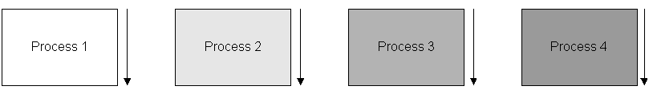
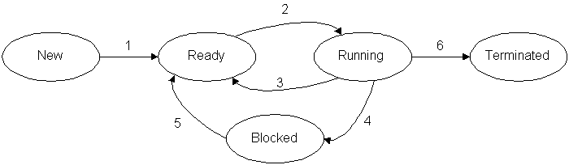
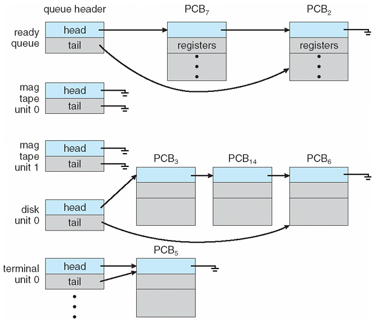
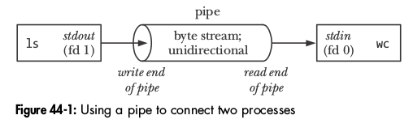
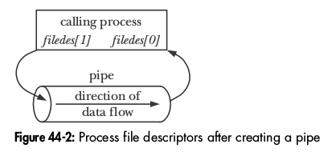
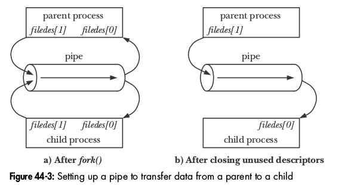
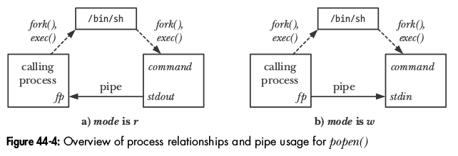

Overview
Terminology
Parallelism 
How long does it take for each process to finish? How about all processes?
There are several states in which a process can be. They are mutually-exclusive, so a process can only be in exactly one of these states at any given time:
State Transitions
Utilities like psps, pstree, top, htop (on Linux, with GUIs ksysguard, gnome-system-monitor) and Task ManagerTask Manager and Process Explorer (on Windows) can give you lots of detailed information about all of the processes on a computer.
From the ps man page on Linux:
PROCESS STATE CODES
Here are the different values that the s, stat and state output specifiers (header "STAT" or "S") will
display to describe the state of a process.
D Uninterruptible sleep (usually IO)
R Running or runnable (on run queue)
S Interruptible sleep (waiting for an event to complete)
T Stopped, either by a job control signal or because it is being traced.
W paging (not valid since the 2.6.xx kernel)
X dead (should never be seen)
Z Defunct ("zombie") process, terminated but not reaped by its parent.
For BSD formats and when the stat keyword is used, additional characters may be displayed:
< high-priority (not nice to other users)
N low-priority (nice to other users)
L has pages locked into memory (for real-time and custom IO)
s is a session leader
l is multi-threaded (using CLONE_THREAD, like NPTL pthreads do)
+ is in the foreground process group
Process Control Block (PCB)
Each process has a block of memory (typically a C struct) that contains all of the relevant information about a process. The PCB can contain a massive amount of information. Some of the info includes:
The PCBs are kept on a linked-list structure that represents a queue for various devices (CPU, disk, etc.)
 Operating System Concepts - 8th Edition Silberschatz, Galvin, Gagne ©2009
Process Scheduling
Process Creation
Process Creationfork Example (fork.c)
#include <stdio.h> /* printf */
#include <stdlib.h> /* exit */
#include <unistd.h> /* fork, getpid, sleep */
#include <sys/wait.h> /* wait */
int main(void)
{
int i, pid;
pid = getpid();
printf("parent pid = %d\n", pid);
pid = fork();
if (pid == 0) /* child process is always 0 */
{
for (i = 0; i < 10; i++)
{
printf("child process: %d\n",i);
sleep(1);
}
printf("child exiting\n");
exit(0);
}
else /* parent process is non-zero (child's pid) */
{
printf("child pid = %d\n", pid);
printf("waiting for child\n");
wait(NULL);
printf("child terminated\n");
}
printf("parent exiting\n");
return 0;
}
Running the program 3 times. The child's output is in red:
Output 1 Output 2 Output 3
In normal, production code (read: homework assignments), you will want to handle failures (which are not uncommon):
pid = fork();
if (pid == 0) /* child process is always 0 */
{
/* do child stuff */
}
else if (pid > 0) /* parent process is non-zero (child's pid) */
{
/* do parent stuff */
}
else /* fork failed, pid is -1 */
{
/* handle error */
}
#include <stdio.h> /* printf */
#include <stdlib.h> /* exit */
#include <string.h> /* strcpy */
#include <unistd.h> /* fork, getpid, sleep */
#include <sys/wait.h> /* wait */
int main(void)
{
int pid;
char buffer[100] = "Shared data";
pid = getpid();
printf("parent: pid = %d\n", pid);
pid = fork();
if (pid == 0) /* child process is always 0 */
{
printf("child: buffer is %s\n", buffer);
strcpy(buffer, "Child data");
printf("child: buffer is %s\n", buffer);
printf("child: child exiting\n");
exit(0);
}
else /* parent process is non-zero (child's pid) */
{
sleep(1);
printf("parent: child pid = %d\n", pid);
printf("parent: waiting for child\n");
wait(NULL);
printf("parent: child terminated\n");
printf("parent: buffer is %s\n", buffer);
}
printf("parent: parent exiting\n");
return 0;
}
Output:parent: pid = 1396 child: buffer is Shared data child: buffer is Child data child: child exiting parent: child pid = 936 parent: waiting for child parent: child terminated parent: buffer is Shared data parent: parent exiting
#include <stdio.h> /* printf */
#include <stdlib.h> /* exit */
#include <unistd.h> /* fork, getpid */
#include <sys/wait.h> /* wait */
int main(void)
{
int pid;
pid = fork();
if (pid == 0) /* child */
{
exit(123); /* same as return 123; */
}
else /* parent */
{
int status;
wait(&status);
if (WIFEXITED(status))
{
int code = WEXITSTATUS(status); /* extract low 8 bits */
printf("child terminated with value %i\n", code);
}
}
return 0;
}
Output:Note that the only values you can return to the parent this way are 0 to 255 (an unsigned char) and you must use the macro WIFEXITED to check first.child terminated with value 123
/* DO NOT compile with optimizations enabled! */
#include <stdio.h> /* printf, stdout */
#include <stdlib.h> /* exit */
#include <unistd.h> /* fork, getpid */
#include <sys/wait.h> /* wait */
int main(void)
{
int pid;
pid = fork();
if (pid == 0) /* child */
{
int x;
printf("child pid: %i\n", getpid());
sleep(10); /* give user a chance to send a signal */
/* Uncomment one of these to see what happens */
//x = 3 / pid; /* SIGFPE, divide by zero */
//abort(); /* SIGABRT, abort the program */
//x = *(int *)0xFFFFFFF; /* SIGSEGV, dereference arbitrary address */
exit(123); /* normal exit, code retrieved by parent */
}
else /* parent */
{
int exit_code;
int status;
wait(&status);
printf("child terminated with value %08X, %i\n", status, status); /* raw value */
exit_code = WEXITSTATUS(status); /* extract exit code */
if (WIFEXITED(status)) /* normal exit */
printf("child terminated normally with exit code %i\n", exit_code);
else /* abnormal exit */
printf("child terminated abnormally, code: %i\n", exit_code);
}
return 0;
}
Output: (divide by zero)child pid: 1328 child terminated with value 00007B00, 31488 child terminated normally with exit code 123
This value is the signal that was sent to the application:child pid: 1535 child terminated with value 00000008, 8 child terminated abnormally, code: 0
Send some other signal to the child while it's sleeping and see the result.1) SIGHUP 2) SIGINT 3) SIGQUIT 4) SIGILL 5) SIGTRAP 6) SIGABRT 7) SIGBUS 8) SIGFPE 9) SIGKILL 10) SIGUSR1 11) SIGSEGV 12) SIGUSR2 13) SIGPIPE 14) SIGALRM 15) SIGTERM 16) SIGSTKFLT 17) SIGCHLD 18) SIGCONT 19) SIGSTOP 20) SIGTSTP 21) SIGTTIN 22) SIGTTOU 23) SIGURG 24) SIGXCPU 25) SIGXFSZ 26) SIGVTALRM 27) SIGPROF 28) SIGWINCH 29) SIGIO 30) SIGPWR 31) SIGSYS 34) SIGRTMIN 35) SIGRTMIN+1 36) SIGRTMIN+2 37) SIGRTMIN+3 38) SIGRTMIN+4 39) SIGRTMIN+5 40) SIGRTMIN+6 41) SIGRTMIN+7 42) SIGRTMIN+8 43) SIGRTMIN+9 44) SIGRTMIN+10 45) SIGRTMIN+11 46) SIGRTMIN+12 47) SIGRTMIN+13 48) SIGRTMIN+14 49) SIGRTMIN+15 50) SIGRTMAX-14 51) SIGRTMAX-13 52) SIGRTMAX-12 53) SIGRTMAX-11 54) SIGRTMAX-10 55) SIGRTMAX-9 56) SIGRTMAX-8 57) SIGRTMAX-7 58) SIGRTMAX-6 59) SIGRTMAX-5 60) SIGRTMAX-4 61) SIGRTMAX-3 62) SIGRTMAX-2 63) SIGRTMAX-1 64) SIGRTMAX
Why does it say Don't compile with optimizations?
#include <stdio.h> /* printf */
#include <stdlib.h> /* exit */
#include <unistd.h> /* fork, getpid, sleep */
#include <sys/wait.h> /* wait, waitpid */
/* Doesn't return */
void dochild(int count)
{
int pid = getpid();
printf("[%i] child process\n", pid);
sleep(count);
printf("[%i] child exiting\n", pid);
exit(count * 10);
}
int main(void)
{
int i, cpid[3];
int ppid = getpid();
printf("parent pid = %d\n", ppid);
cpid[0] = fork();
if (cpid[0] == 0) /* child process is always 0 */
dochild(1);
cpid[1] = fork();
if (cpid[1] == 0) /* child process is always 0 */
dochild(2);
cpid[2] = fork();
if (cpid[2] == 0) /* child process is always 0 */
dochild(3);
/* parent process is non-zero (child's pid) */
printf("waiting for children\n");
for (i = 0; i < 3; i++)
{
int status;
printf("waiting for child pid: %d\n", cpid[i]);
waitpid(cpid[i], &status, 0);
if (WIFEXITED(status))
printf("[%i] child ended normally: %i\n", cpid[i], WEXITSTATUS(status));
else
printf("[%i] child ended abnormally\n", cpid[i]);
}
printf("children terminated\n");
printf("parent exiting\n");
return 0;
}
Output 1 Output 2 Output 3
if (count == 3) abort();
Setting it to a non-zero value will tell the scheduler to favor the child over the parent.cat /proc/sys/kernel/sched_child_runs_first
Use this technique if the parent process has other work to do while the children are working. If the parent has nothing to do (but wait for the children), DO NOT UNDER ANY CIRCUMSTANCES use this technique. There are various ways to wait for multiple children, this just demonstrates one way.
#include <stdio.h> /* printf */
#include <stdlib.h> /* exit */
#include <unistd.h> /* fork, getpid, sleep */
#include <sys/wait.h> /* wait, waitpid */
/* Doesn't return */
void dochild(int count)
{
int pid = getpid();
printf("[%i] child process\n", pid);
sleep(count);
printf("[%i] child exiting\n", pid);
exit(count * 10);
}
int main(void)
{
#define COUNT 3
int running = COUNT;
int i, cpid[COUNT], terminated[COUNT] = {0};
int ppid = getpid();
printf("parent pid = %d\n", ppid);
for (i = 0; i < COUNT; i++)
{
cpid[i] = fork();
if (cpid[i] == 0) /* child process is always 0 */
dochild(i);
}
/* parent process is non-zero (child's pid) */
printf("waiting for children\n");
while (running)
{
for (i = 0; i < COUNT; i++)
{
int status;
/*printf("waiting for child pid: %d\n", cpid[i]);*/
/* If the parent has work to do while waiting, do it here...*/
if (!terminated[i])
{
/*printf("child pid: %d not terminated\n", cpid[i]);*/
if (waitpid(cpid[i], &status, WNOHANG))
{
if (WIFEXITED(status))
{
printf("[%i] child ended normally: %i\n", cpid[i], WEXITSTATUS(status));
running--;
terminated[i] = 1;
}
}
}
}
}
printf("children terminated\n");
printf("parent exiting\n");
return 0;
}
Output 1 Output 2 Output 3
DO NOT use the technique above (WNOHANG) for any assignments in the class unless specifically instructed to do so. Doing so will cause you to lose significant points (most likely a 0 on the assignment, plus, Mead will KICK YOUR ASS). I'm only showing this technique so that, in the future (outside of this class), you may find that you need this capability. Doing this when the parent has nothing to do will effectively disable one of the cores on your CPU and slow down the entire system.
Forking, Buffering, and Redirection
You may recall that, for efficiency reasons, data written to stdout (e.g. via printf), is buffered. This means that instead of printf writing each byte individually to the output, entire lines are written at once. This can be a significant performance improvement.There are two major types of buffering: line buffering and full buffering. stdout is line-buffered, which means that when a newline is encountered, all of the bytes up to and including the newline are then written to stdout. The implications of this are, for example, if you were writing output using printf and your program crashed before printf encountered the newline, some bytes may never have made it to the screen.
This behavior may lead to some surprises when a parent and child process are both writing buffered output to stdout. Some examples will demonstrate.
Here is a very simple example. (fork-redirect.c)
#include <stdio.h> /* printf */
#include <stdlib.h> /* exit */
#include <unistd.h> /* fork, getpid */
#include <sys/wait.h> /* wait */
int main(void)
{
int pid;
/* The text will be sent to the output when the newline is encountered. */
printf("This should only print once. (%i)\n", getpid());
pid = fork();
if(pid == 0)
{
printf("This is the child (pid: %i).\n", getpid());
exit(123);
}
else if (pid > 0)
{
wait(NULL);
printf("This is the parent (pid: %i).\n", getpid());
}
else
printf("Fork failed.\n");
return 0;
}
Now, let's remove the newline from the first print statement and see what the output looks like. We're changing this:This should only print once. (9206) This is the child (pid: 9207). This is the parent (pid: 9206).
/* The text will be sent to the output when the newline is encountered. */
printf("This should only print once. (%i)\n", getpid());
/* There is no newline, so the text won't be sent until the buffer is full. */
printf("This should only print once. (%i)", getpid());
The first thing to notice is that there is no newline after the first line prints. This is expected, of course, since we removed it. However, you'll notice that the first line is now printed twice. One line is printed in the parent and the other is printed in the child.This should only print once. (9436)This is the child (pid: 9437). This should only print once. (9436)This is the parent (pid: 9436).
Why is that?
This is the result of line-buffered output:
So, how do we "fix" that?
One solution is to make sure to flush the buffer before calling fork. This ensures that the contents are sent to the output before creating the child process. Placing this code after the first printf and before the fork:
Now, we see this as the output:fflush(stdout);
There is still no newline after the first line (expected), but the line is only sent once to the output.This should only print once. (9817)This is the child (pid: 9818). This is the parent (pid: 9817).
Another solution is to turn off buffering for stdout using setvbuf:
Add this line of code before calling printf:int setvbuf (FILE *stream, char *buf, int mode, size_t size);
The third parameter is the intesting one and can be one of three:setvbuf(stdout, NULL, _IONBF, 0);
The example above shows how this "problem" is the result of not printing a new line. However, there is still a problem when you do print the newline. It occurs when you redirect the output to a file.
Suppose we put the newline back into the printf statement:
/* The text will be sent to the output when the newline is encountered. */
printf("This should only print once. (%i)\n", getpid());
this is what you would see in the file:./fork-redirect > out.txt
We're back to the same problem we had without the newline. So, why is this?This should only print once. (18897) This is the child (pid: 18899). This should only print once. (18897) This is the parent (pid: 18897).
It turns out that, when you redirect stdout, the OS (or shell) is setting up a pipe. (Much like the pipes you've been using at the command line). Instead of being line-buffered, the pipe is fully-buffered, which means that the output is only sent to stdout when the buffer is full. It doesn't matter if there are newlines in the text or not.
The solution is the same as before. Either you can flush the buffer before the fork, or you can set stdout back to line-buffered (or even no buffering). Either of these will do the trick:
orsetvbuf(stdout, NULL, _IOLBF, 0); /* line-buffered */
setvbuf(stdout, NULL, _IONBF, 0); /* no buffering */
The recommended approach is to just use fflush when you need to make sure the buffer is sent to the output. It's easier to use and understand (most students and beginners have never heard of setvbuf). It's also more efficient because it only affects the last printf statement, not every printf statement.
The exec Function
int execl(const char *path, const char *arg, ...); int execlp(const char *file, const char *arg, ...); int execle(const char *path, const char *arg, ...); int execv(const char *path, char *const argv[]); int execvp(const char *file, char *const argv[]); int execvpe(const char *file, char *const argv[], char *const envp[]);
#include <stdio.h> /* printf */
#include <stdlib.h> /* exit */
#include <unistd.h> /* fork, getpid */
#include <sys/wait.h> /* wait */
int main(void)
{
int pid;
pid = fork();
if (pid == 0) /* child */
{
printf("child: executing a program...\n");
execl("/usr/bin/geany", "geany", NULL);
printf("child: if you see this, the exec failed\n");
perror("geany");
exit(10); /* arbitrary exit code */
}
else /* parent */
{
int code, status;
printf("parent: waiting for child to terminate\n");
wait(&status);
code = WEXITSTATUS(status);
printf("parent: child terminated with value %i\n", code);
}
return 0;
}
Output:Changing /usr/bin/geany to /usr/bin/foobar:parent: waiting for child to terminate child: executing a program... parent: child terminated with value 0
Output:parent: waiting for child to terminate child: executing a program... child: if you see this, the exec failed parent: child terminated with value 10
perror("foobar");
foobar: No such file or directory
Process Termination
After exit(), the exit status must be transmitted to the parent process. There are three cases. If the parent has set SA_NOCLDWAIT, or has set the SIGCHLD handler to SIG_IGN, the status is discarded. If the parent was waiting on the child it is notified of the exit status. In both cases the exiting process dies immediately. If the parent has not indicated that it is not interested in the exit status, but is not waiting, the exiting process turns into a "zombie" process (which is nothing but a container for the single byte representing the exit status) so that the parent can learn the exit status when it later calls one of the wait() functions.
/home/mmead/bin/wd 4000 4000 valgrind $(VALGRIND_OPTIONS) 2>> diff.txt ./$(PRG) | /home/mmead/bin/throttle 3000 -we > /dev/null
Interprocess Communication (IPC)
We're going to look at 3 methods of interprocess communication:
In order to keep these examples simple and understandable, most error handling has been removed. In a real-world program (like the homework assignments), failing to check the return values of these IPC functions can result in a lot of debugging because something failed. Also, failing to check the return values will cause you to receive a lower grade on your assignments.
#include <stdio.h> /* printf */
#include <stdlib.h> /* exit */
#include <string.h> /* strcpy */
#include <unistd.h> /* sleep, fork */
#include <sys/shm.h> /* shmget, shmat, shmdt, shmctl */
#include <sys/wait.h> /* wait */
int main(void)
{
int pid;
int shmid; /* return value from fork/shmget */
char *buffer; /* shared buffer */
key_t key = 123; /* arbitrary key (0x7b) */
shmid = shmget(key, 1024, 0600 | IPC_CREAT);
buffer = (char *) shmat(shmid, NULL, 0);
strcpy(buffer,"");
pid = fork();
if (pid == 0) /* child */
{
printf("child: putting message in buffer\n");
strcpy(buffer, "There's a fine line between clever and stupid.");
shmdt(buffer); /* detach memory from child process */
printf("child: sleeping for 5 seconds...\n");
sleep(5);
printf("child: exiting\n");
exit(0);
}
else /* parent */
{
printf("parent: waiting for child to exit...\n");
wait(NULL);
printf("parent: message from child is %s\n", buffer);
shmdt(buffer); /* detach memory from parent process */
shmctl(shmid, IPC_RMID, 0); /* delete memory block */
printf("parent: exiting\n");
}
return 0;
}
Output:parent: waiting for child to exit... child: putting message in buffer child: sleeping for 5 seconds... child: exiting parent: message from child is There's a fine line between clever and stupid. parent: exiting
This is especially true if you create the memory exclusively:Note: If your program doesn't release the shared memory (e.g. due to it crashing), you must remove it manually or subsequent attempts to create the shared memory may fail.
In any event, make sure you are checking the return value from shmget so that if the call fails, you won't waste time wondering why your program is not working.shmid = shmget(key, 1024, 0600 | IPC_CREAT | IPC_EXCL);
which impiles IPC_CREAT and IPC_EXCL. You can also generate (almost) unique keys using ftok.shmid = shmget(IPC_PRIVATE, 1024, 0600);
This code is the parent process and this code is for the child processes.
#include <stdio.h> /* printf */
#include <stdlib.h> /* exit */
#include <string.h> /* strcpy */
#include <unistd.h> /* fork */
#include <sys/msg.h> /* msgget, msgsnd, msgrcv, msgctl */
#include <sys/wait.h> /* wait */
#define BUFSIZE 1024
#define MSG_STRUCT 1
/* Our user-defined structure */
typedef struct
{
long int type; /* must be long int */
char buffer[BUFSIZE]; /* can be anything */
}msg_struct;
int main(void)
{
int pid;
int queue_id; /* shared id */
msg_struct msg; /* our message */
key_t key = 123; /* arbitrary key */
queue_id = msgget(key, 0600 | IPC_CREAT);
pid = fork();
if (pid == 0) /* child */
{
printf("child: sending messages\n");
msg.type = MSG_STRUCT;
strcpy(msg.buffer, "This is message number one...");
msgsnd(queue_id, &msg, BUFSIZE, 0);
sleep(5);
strcpy(msg.buffer, "This is message number two...");
msgsnd(queue_id, &msg, BUFSIZE, 0);
sleep(5);
printf("child: exiting\n");
exit(0);
}
else /* parent */
{
/*sleep(2);*/
printf("parent: waiting on child\n");
wait(NULL);
printf("parent: receiving messages\n");
while (msgrcv(queue_id, &msg, BUFSIZE, 0, IPC_NOWAIT) != -1)
{
if (msg.type == MSG_STRUCT)
printf("message: %s\n", msg.buffer);
else
printf("unknown message\n");
}
msgctl(queue_id, IPC_RMID, NULL);
printf("parent: exiting\n");
}
return 0;
}
Output:parent: waiting on child child: sending messages child: exiting parent: receiving messages message: This is message number one... message: This is message number two... parent: exiting
Shared data: (in a header file, client-server-msg.h)
#define BUFSIZE 1024
#define MSG_STRUCT 1
#define MSG_QUIT 2
#define SHARED_KEY 12345 /* 0x3039 */
typedef struct
{
long int type; /* must be long int */
char buffer[BUFSIZE]; /* can be anything */
}msg_struct;
#include <stdio.h> /* printf, sprintf */
#include <unistd.h> /* sleep */
#include <sys/msg.h> /* msgget, msgsnd, msgctl */
#include "client-server-msg.h" /* shared data */
int main(void)
{
int i;
key_t key = SHARED_KEY;
msg_struct msg;
int queue_id = msgget(key, 0600 | IPC_CREAT);
msg.type = MSG_STRUCT;
for (i = 0; i < 10; i++)
{
printf("client writing: %i\n", i);
sprintf(msg.buffer, "Hello %i", i);
msgsnd(queue_id, &msg, BUFSIZE, 0);
sleep(1);
}
printf("client writing end message\n");
msg.type = MSG_QUIT;
msgsnd(queue_id, &msg, BUFSIZE, 0);
return 0;
}
#include <stdio.h> /* printf */
#include <sys/msg.h> /* msgget, msgrcv, msgctl */
#include "client-server-msg.h" /* shared data */
int main(void)
{
msg_struct msg;
key_t key = SHARED_KEY;
int queue_id = msgget(key, 0600 | IPC_CREAT);
int done = 0;
while(!done)
{
/* If no message is waiting, msgrcv returns -1 */
while (msgrcv(queue_id, &msg, BUFSIZE, 0, 0 /*IPC_NOWAIT*/) != -1)
{
if (msg.type == MSG_STRUCT)
printf("message: %s\n", msg.buffer);
else if ( msg.type == MSG_QUIT ) /* Remove if you want the server */
{ /* to run indefinitely */
done = 1;
break;
}
else
printf("unknown message\n");
}
}
printf("server shutting down\n");
msgctl(queue_id, IPC_RMID, NULL);
return 0;
}
Sending process Receiving process
can be pictured like this (from The Linux Programming Interface book)ls | wc



#include <stdio.h> /* printf, fgets */
#include <stdlib.h> /* exit */
#include <string.h> /* strlen */
#include <unistd.h> /* fork, pipe, read, write, close */
#include <sys/wait.h> /* wait */
int main(void)
{
int pid;
char buffer[1024];
int fd[2];
pipe(fd); /* fd[0] is for read, fd[1] is for write */
pid = fork();
if (pid == 0) /* child */
{
int count;
close(fd[0]); /* close unused end (read), child will write */
/* prompt user for input */
printf("input: ");
fgets(buffer, sizeof(buffer), stdin);
printf("child: message is %s", buffer);
/* write to the pipe (include NUL terminator!) */
count = write(fd[1], buffer, strlen(buffer) + 1);
printf("child: wrote %i bytes\n", count);
exit(0);
}
else /* parent */
{
int count;
close(fd[1]); /* close unused end (write), parent will read */
/* read from the pipe */
count = read(fd[0], buffer, sizeof(buffer));
printf("parent: message is %s", buffer);
printf("parent: read %i bytes\n", count);
wait(NULL); /* reap the child */
}
return 0;
}
Output: (User types 22 characters)input: This is from teh user! child: message is This is from teh user! child: wrote 24 bytes parent: message is This is from teh user! parent: read 24 bytesOutput:input: 12345 child: message is 12345 child: wrote 7 bytes parent: message is 12345 parent: read 7 bytes
Self check: Programming Problem 3.18 from the suggested textbook.
"Design a program using ordinary pipes in which one process sends a string message to a second process, and the second process reverses the case of each character in the message and sends it back to the first process. For example, if the first process sends the message Hi There, the second process will return hI tHERE. This will require using two pipes, one for sending the original message from the first to the second process, and the other for sending the modified message from the second back to the first process."
#include <stdio.h> /* printf, fgets */
#include <stdlib.h> /* exit */
#include <string.h> /* strlen */
#include <ctype.h> /* isalpha, toupper */
#include <unistd.h> /* pipe, read, write, close */
#include <sys/wait.h> /* wait */
void revcase(char *buffer)
{
int i;
int len = strlen(buffer);
for (i = 0; i < len; i++)
{
if (isupper(buffer[i]))
buffer[i] = tolower(buffer[i]);
else if (islower(buffer[i]))
buffer[i] = toupper(buffer[i]);
}
}
int main(void)
{
int pid;
/* setup stuff */
pid = fork();
if (pid == 0) /* child */
{
/* DO STUFF */
exit(0);
}
else /* parent */
{
/* DO STUFF */
wait(NULL);
}
return 0;
}
Using popen for pipes
If you just need to setup a pipe between two processes, there is a function called popen which makes things easier. It basically performs the fork, exec, and pipe stuff for you. Since many programs just need this kind of behavior, it can be a real convenience.This sample code simply prints out the strings: one two three four five six seven to the screen (stdout): (popen0.c)
#include <stdio.h> /* printf */
int main(void)
{
int i;
char *array[] = {"one", "two", "three", "four", "five", "six", "seven"};
int size = sizeof(array) / sizeof(*array);
/* Print to stdout */
for(i = 0; i < size; i++)
printf("%s\n", array[i]);
return 0;
}
If we wanted the output sorted, we would pipe the output to the standard sort program that is available on all POSIX systems using the pipe symbol:one two three four five six seven
Output:./popen0 | sort
But, suppose we wanted to sort the data within our program and not require the user to have to do the piping on the command line? That's where the popen function comes in handy.five four one seven six three two
This example shows how you can use the sort program to sort your data from within your program. So, instead of using printf to print to stdout, we're using fprintf to print to the sort program! (popen1.c)
/* compile with -D_BSD_SOURCE if using -ansi */
#include <stdio.h> /* fprintf, popen, pclose, perror */
int main(void)
{
int i;
FILE *pfp;
char *array[] = {"one", "two", "three", "four", "five", "six", "seven"};
int size = sizeof(array) / sizeof(*array);
/* Create write-only pipe (i.e. open program for writing) */
pfp = popen("sort", "w");
if (!pfp)
{
perror("popen");
return 1;
}
/* Print to pipe (write to sort program) */
for(i = 0; i < size; i++)
fprintf(pfp, "%s\n", array[i]);
/* Close the pipe */
pclose(pfp);
return 0;
}
Output:
five four one seven six three two
Diagram from The Linux Programming Interface book: 
This example shows how you can setup a pipe within your C program just as if you were using the command line: (popen2.c) This is equivalent to the command line: ls /usr/bin | sort -r
/* compile with -D_BSD_SOURCE if using -ansi */
#include <stdio.h> /* popen, perror, fprintf, pclose, fgets */
#define BUFSIZE 100
int main(void)
{
FILE *inpipe, *outpipe;
char buffer[BUFSIZE];
/* read pipe from ls (i.e. open ls program for reading) */
inpipe = popen("ls /usr/bin", "r");
if (!inpipe)
{
perror("popen read:");
return 1;
}
/* write pipe to sort (i.e. open sort program for writing) */
outpipe = popen("sort -r", "w");
if (!outpipe)
{
perror("popen write:");
return 2;
}
/* read from ls and write to sort (reversed) */
/* it's this: ls /usr/bin | sort -r */
while(fgets(buffer, BUFSIZE, inpipe))
fprintf(outpipe, "%s", buffer);
/* clean up */
pclose(inpipe);
pclose(outpipe);
return 0;
}
On my system there are over 4,000 lines!zxpdf zsoelim zsh zrun zlib-flate zjsdecode zipsplit zipnote zipinfo zipgrep zipdetails zipcloak zip zim . . . aainfo aaflip aafire a5toa4 a5booklet a2ping a2p 7zr 7za 7z 2to3-3.4 2to3-2.7 2to3 [
Capturing output from the compiler: (popen3.c)
/* compile with -D_BSD_SOURCE if using -ansi */
#include <stdio.h> /* popen, perror, printf, pclose, fgets */
#define BUFSIZE 100
int main(void)
{
FILE *inpipe;
char buffer[BUFSIZE];
/* read pipe from gcc */
inpipe = popen("gcc foo.c", "r");
if (!inpipe)
{
perror("popen read:");
return 1;
}
/* Read from compiler and output to screen */
while(fgets(buffer, BUFSIZE, inpipe))
printf("%s", buffer);
/* clean up */
pclose(inpipe);
return 0;
}
int main(void)
{
return; /* Missing return value */
}
With this knowledge, you can now you can start writing your own IDE (e.g. Visual Studio)!foo.c: In function 'main': foo.c:3:3: warning: 'return' with no value, in function returning non-void return; ^
Create your own IDE on Windows with child processes and pipes.
Win32 Process Creation
#include <iostream>
#include <windows.h>
int main(void)
{
STARTUPINFO start_info;
PROCESS _INFORMATION proc_info;
DWORD pid = GetCurrentProcessId();
std::cout << "parent pid = " << pid << std::endl;
// allocate memory and set to 0
ZeroMemory(&start_info, sizeof(STARTUPINFO));
ZeroMemory(&proc_info, sizeof(PROCESS_INFORMATION));
std::cout << "creating child process" << std::endl;
const char *program = "c:\\windows\\system32\\notepad.exe";
BOOL err = CreateProcess(program, // program to run
0, // command line
0, // security attributes
0, // thread attributes
FALSE, // don't inherit handles
0, // creation flags (none)
0, // use parent's environment
0, // use parent's directory
&start_info, // start up info
&proc_info // process info
);
if (!err)
{
std::cout << "Error creating process" << std::endl;
return -1;
}
std::cout << "waiting for child to terminate" << std::endl;
WaitForSingleObject(proc_info.hProcess, INFINITE);
std::cout << "parent terminating" << std::endl;
CloseHandle(proc_info.hProcess);
CloseHandle(proc_info.hThread);
return 0;
}
#include <stdio.h>
#include <windows.h>
int main(void)
{
const int COUNT = 2;
HANDLE proc[COUNT], thread[COUNT];
const char *programs[] = {"c:\\windows\\system32\\notepad.exe",
"c:\\windows\\system32\\mspaint.exe",
};
for (int i = 0; i < COUNT; ++i)
{
STARTUPINFO si;
PROCESS_INFORMATION pi;
ZeroMemory(&si, sizeof(si));
ZeroMemory(&pi, sizeof(pi));
CreateProcess(programs[i], 0, 0, 0, FALSE, 0, 0, 0, &si, &pi);
proc[i] = pi.hProcess;
thread[i] = pi.hThread;
}
WaitForMultipleObjects(COUNT, proc, TRUE, INFINITE);
for (int i = 0; i < COUNT; ++i)
{
printf("Process: %i, Thread: %i ended.\n", proc[i], thread[i]);
CloseHandle(proc[i]);
CloseHandle(thread[i]);
}
return 0;
}
{kind=link}